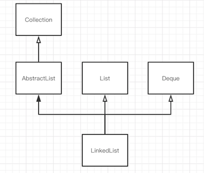

源码阅读之LinkedList实现细节
0x00 描述
LinkedList 是一个双向链表，这是一个基础的数据结构。打开 LinkedList 源码，可以看到它继承于 AbstractSequentialList ，这个是 AbstractList 的子类。同时也实现了 List 、Deque 、Clone、Serializable 接口。所以简化的类关系图可以表示为

关键属性
size记录当前数组元素的个数first链表头指针last链表尾部指针modCount记录修改次数，这个字段是继承于AbstractList
LinkedList 是实现了序列化接口 Serializable ，而以上属性都被声明为 transient 表示这些字段不参与序列化。
节点
private static class Node<E> {
E item;
Node<E> next;
Node<E> prev;
Node(Node<E> prev, E element, Node<E> next) {
this.item = element;
this.next = next;
this.prev = prev;
}
这个节点类，记录链表中的节点的数据，有前指针、后指针和具体的数据元素。这个数据这里用泛型来表示了。
构造方法
public LinkedList() {
}
这个是默认构造函数，创建一个空链表。
public LinkedList(Collection<? extends E> c) {
this();
addAll(c);
}
这是通过列表来创建链表的。它调用了 addAll 方法。这个方法后文会讲到。
0x01 常用方法
addFirst(E e)
在链表头部添加节点
public void addFirst(E e) {
linkFirst(e);
}
private void linkFirst(E e) {
final Node<E> f = first;
final Node<E> newNode = new Node<>(null, e, f);
first = newNode;
if (f == null)
last = newNode;
else
f.prev = newNode;
size++;
modCount++;
}
它实际是调用了内部的一个私有方法 linkFirst 。只需要改变指针指向，时间复杂度O(1)。
addLast(E e)
public void addLast(E e) {
linkLast(e);
}
void linkLast(E e) {
final Node<E> l = last;
final Node<E> newNode = new Node<>(l, e, null);
last = newNode;
if (l == null)
first = newNode;
else
l.next = newNode;
size++;
modCount++;
}
在链表尾部添加一个节点。它也是内部的 linkLast 方法。这方法执行效率也很高，只需要改变指针指向，时间复杂度是O(1)。
add(E e)
public boolean add(E e) {
linkLast(e);
return true;
}
可以看出也是调用了 linkLast 方法。
add(int index, E element)
public void add(int index, E element) {
checkPositionIndex(index);
if (index == size)
linkLast(element);
else
linkBefore(element, node(index));
}
private void checkPositionIndex(int index) {
if (!isPositionIndex(index))
throw new IndexOutOfBoundsException(outOfBoundsMsg(index));
}
private boolean isPositionIndex(int index) {
return index >= 0 && index <= size;
}
在某个 index 前插入元素。
首先它会检查 index 是否正确。如果在 0~size 范围内的下标，那么就执行插入的方法；
它会判断如果 index 是等于 size 那么就在尾部插入元素，否则就在 index 所在节点前面插入元素。
void linkBefore(E e, Node<E> succ) {
// assert succ != null;
final Node<E> pred = succ.prev;
final Node<E> newNode = new Node<>(pred, e, succ);
succ.prev = newNode;
if (pred == null)
first = newNode;
else
pred.next = newNode;
size++;
modCount++;
}
这个方法在节点 succ 前面添加元素，时间复杂度为O(1)。
在调用这个方法之前需要获取到节点
Node<E> node(int index) {
// assert isElementIndex(index);
if (index < (size >> 1)) {//size >> 1 相当于 size/2
Node<E> x = first;
for (int i = 0; i < index; i++)
x = x.next;
return x;
} else {
Node<E> x = last;
for (int i = size - 1; i > index; i--)
x = x.prev;
return x;
}
}
在链表中要通过下标查找一个节点，需要通过遍历。这里做了一个优化，当 index 是在前半部分时从链表头部开始遍历；如果 index 超过当前链表的一半时则从后面开始遍历查询，它的时间复杂度为O(n)。
addAll(Collection<? extends E> c)
public boolean addAll(Collection<? extends E> c) {
return addAll(size, c);
}
在尾部插入一个列表，通过调用 add(int,Collection) 来实现。
addAll(int index, Collection<? extends E> c)
public boolean addAll(int index, Collection<? extends E> c) {
//先检测 index 是否有效
checkPositionIndex(index);
//以数组的形式获取到列表数据
Object[] a = c.toArray();
int numNew = a.length;
if (numNew == 0)
return false;
//找到index的前向指针，后向指针
Node<E> pred, succ;
if (index == size) {
succ = null;
pred = last;
} else {
succ = node(index);
pred = succ.prev;
}
//依次把数组中的节点插入到列表中
for (Object o : a) {
@SuppressWarnings("unchecked") E e = (E) o;
Node<E> newNode = new Node<>(pred, e, null);
if (pred == null)
first = newNode;
else
pred.next = newNode;
pred = newNode;
}
//链接后向指针
if (succ == null) {
last = pred;
} else {
pred.next = succ;
succ.prev = pred;
}
//更新size和modCount
size += numNew;
modCount++;
return true;
}
这个方法稍微复杂一点
- 先检测
index是否有效 - 以数组的形式获取到列表数据
- 找到
index所在节点的前向指针，后向指针 - 依次把数组中的节点插入到列表中
- 链接后向指针的数据
- 更新
size和modCount
get(int index)
public E get(int index) {
checkElementIndex(index);
return node(index).item;
}
获取 index 所在元素，通过 node 方法获取。前面分析可以知道，这个方法需要遍历，它的时间复杂度是O(n)。
contains(Object o)
public boolean contains(Object o) {
return indexOf(o) != -1;
}
public int indexOf(Object o) {
int index = 0;
if (o == null) {
for (Node<E> x = first; x != null; x = x.next) {
if (x.item == null)
return index;
index++;
}
} else {
for (Node<E> x = first; x != null; x = x.next) {
if (o.equals(x.item))
return index;
index++;
}
}
return -1;
}
查询某个对象是否存在于该链表中是通过遍历来实现的。
peek()
查看链表头节点
public E peek() {
final Node<E> f = first;
return (f == null) ? null : f.item;
}
peekFirst()
查看链表头节点
public E peekFirst() {
final Node<E> f = first;
return (f == null) ? null : f.item;
}
peekLast()
查看链表尾部节点
public E peekLast() {
final Node<E> l = last;
return (l == null) ? null : l.item;
}
poll()
获取头节点，并把头节点从链表中删除
public E poll() {
final Node<E> f = first;
return (f == null) ? null : unlinkFirst(f);
}
private E unlinkFirst(Node<E> f) {
// assert f == first && f != null;
final E element = f.item;
final Node<E> next = f.next;
f.item = null;
f.next = null; // help GC
first = next;
if (next == null)
last = null;
else
next.prev = null;
size--;
modCount++;
return element;
}
pollFirst()
同上
public E pollFirst() {
final Node<E> f = first;
return (f == null) ? null : unlinkFirst(f);
}
pollLast()
获取尾部节点，并将尾部节点删除
public E pollLast() {
final Node<E> l = last;
return (l == null) ? null : unlinkLast(l);
}
private E unlinkLast(Node<E> l) {
// assert l == last && l != null;
final E element = l.item;
final Node<E> prev = l.prev;
l.item = null;
l.prev = null; // help GC
last = prev;
if (prev == null)
first = null;
else
prev.next = null;
size--;
modCount++;
return element;
}
remove()
删除头节点
public E remove() {
return removeFirst();
}
public E removeFirst() {
final Node<E> f = first;
if (f == null)
throw new NoSuchElementException();
return unlinkFirst(f);
}
clear()
清空链表
public void clear() {
// Clearing all of the links between nodes is "unnecessary", but:
// - helps a generational GC if the discarded nodes inhabit
// more than one generation
// - is sure to free memory even if there is a reachable Iterator
for (Node<E> x = first; x != null; ) {
Node<E> next = x.next;
x.item = null;
x.next = null;
x.prev = null;
x = next;
}
first = last = null;
size = 0;
modCount++;
}
遍历整个链表，将节点中的数据置为 null 。
0x02 总结
LinkedList是一个双向链表，它是线程不安全的。LinkedList擅长插入、删除操作，时间复杂度是O(1)；但是如果事先不知道被插入的节点，则需要通过遍历来查询到该节点，而查询操作就不是很高效了，时间复杂度是O(n)。get方法需要遍历获得，containts方法也需要遍历- 在链表头部或尾部插入节点效率要高，但是通过下标
index插入节点则需要遍历找到插入的位置，再执行插入操作。
- 上一篇 源码阅读之ArrayList实现细节
- 下一篇 源码阅读之Java栈的实现